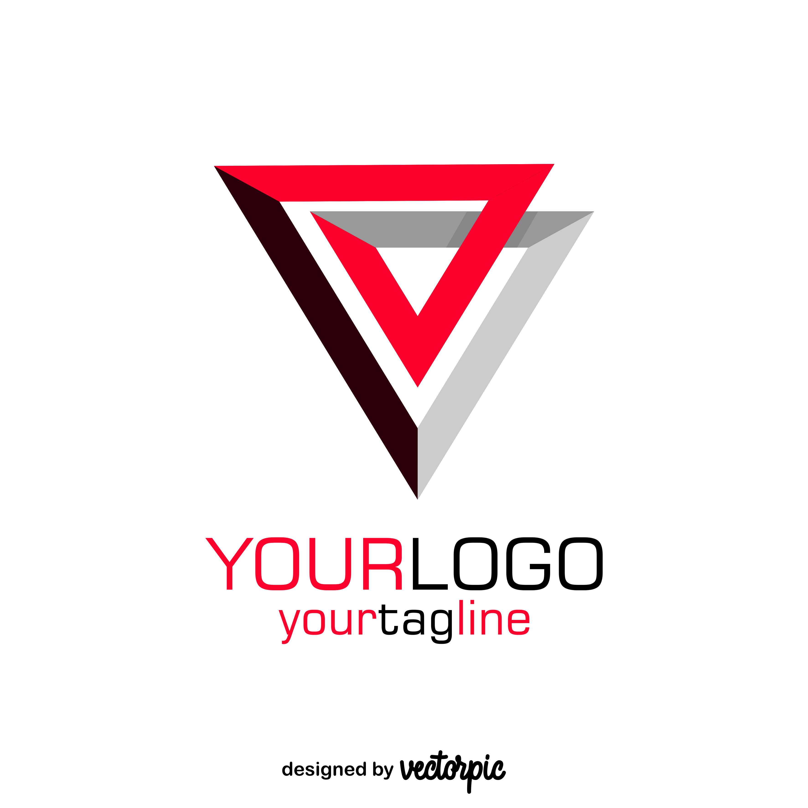
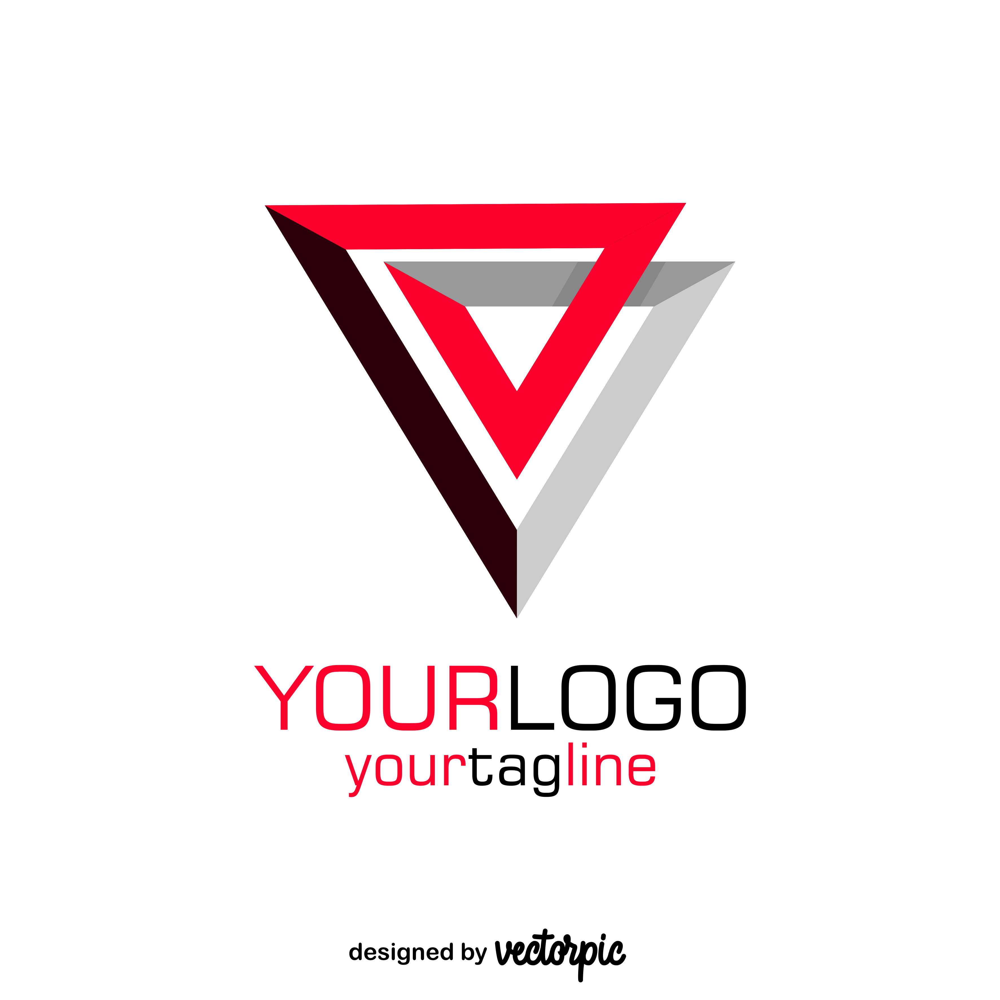

Simple way to search listings across the web

 

For results
search execiltive placeholder listing and yourfavourite classifieds all at once
Placeholder indexes and shows commercial real estate listenings from
placeholder,cralgslist,facebook to simplify your search pross
Clear and simple listing discriptions
Creating an attractive rental listing description is key to attracting quality
tenants. Here are some tips and an example to help you compelling
description

Popular location searches
Shipping and delivery are two distinct stages in the logistics process, each playing a crucial role in getting products to customers. Shipping Definition: The process of transporting goods from the seller or manufacturer to an intermediary location, such as a warehouse or distribution center. Scope: Covers the entire journey from the point of origin to the intermediary location. Quantity: Typically involves bulk shipments. Responsibility: The seller or shipper is responsible for the goods during this phase. Modes of Transport: Can include air, sea, rail, and ground transportation. Delivery Definition: The final stage where goods are transported from the local distribution center or store to the customer's address. Scope: Focuses on the last mile, ensuring the product reaches the end customer. Quantity: Deals with individual packages. Responsibility: Local carriers or courier services handle this phase. Modes of Transport: Primarily ground transportation, often involving local carriers like USPS, FedEx, or UPS. Understanding these differences helps businesses optimize their logistics processes and improve customer satisfaction12. If you have any more questions or need further details, feel free to ask!